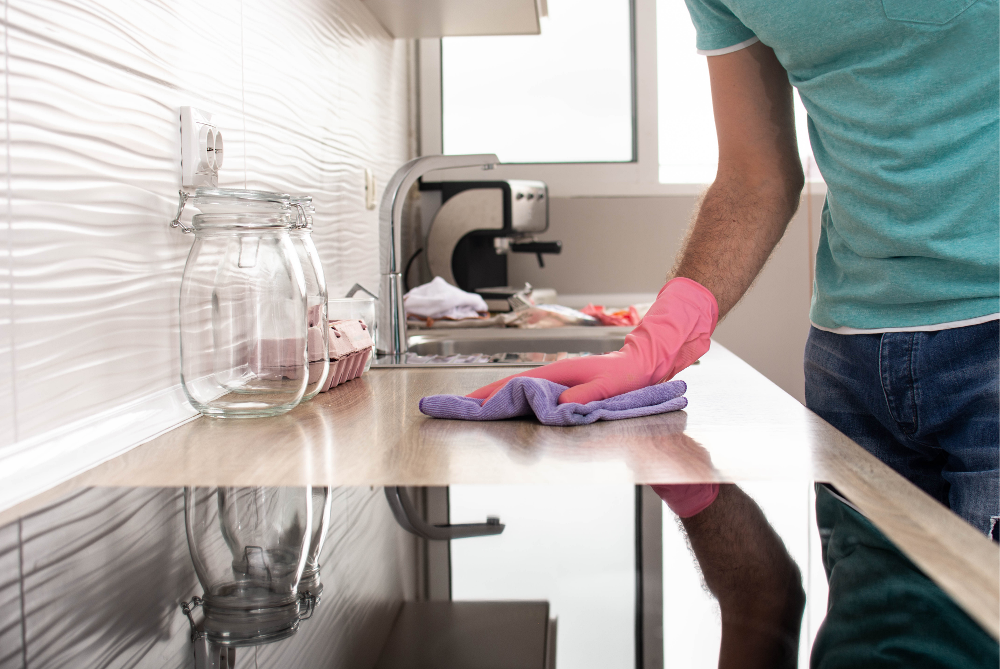
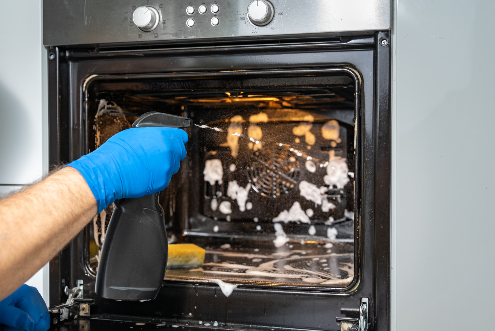

The kitchen is one of the hardest rooms in the home to keep truly clean. Between grease that settles on cabinets, crumbs hiding under appliances, food splatters on walls, and buildup around the sink, a quick wipe-down doesn't always feel like enough.
The good news? A kitchen deep clean doesn't have to mean spending your entire weekend scrubbing. With the right order of operations and a few simple habits, you can make the process faster, easier, and much less overwhelming. Here's how to tackle the kitchen without turning cleaning into an all-day project.
Start With the Clutter
Before you reach for the cleaning products, clear the counters.
Put away appliances, dishes, food, mail, and anything else that has accumulated on your countertops. Empty the sink and load the dishwasher if you have one.
This step might seem unrelated to cleaning, but it makes a big difference. A cluttered kitchen gives you more objects to clean around and makes it harder to see which surfaces actually need attention.
Once the counters and sink are clear, you'll have a much easier time moving through the rest of the kitchen.
Work From Top to Bottom
One of the easiest ways to make deep cleaning harder than it needs to be is cleaning in the wrong order.
Start with higher surfaces such as the tops of cabinets, range hood, shelves, and light fixtures. Then move down to countertops, appliances, cabinets, and finally the floor.
Why? Dust, crumbs, and cleaning residue can fall as you work. If you mop the floor first and then clean your cabinets, you'll probably have to clean the floor again.
Working from top to bottom means you're not undoing your own work.
Don't Forget the Places You Don't See
Deep cleaning isn't just about making the kitchen look clean.
Some of the biggest messes can hide in places you don't immediately notice. Check underneath small appliances, behind the toaster, around the refrigerator, inside cabinet corners, and underneath the sink.
Pay particular attention to areas where crumbs and food particles can collect.
You don't necessarily need to move every appliance every time you clean. During a deep clean, however, moving what you can safely move gives you the opportunity to deal with buildup that has been sitting there for weeks or months.
Tackle Grease Before You Scrub
Grease can be one of the most frustrating parts of cleaning a kitchen because wiping it with a dry cloth often just spreads it around.
Instead, use an appropriate kitchen-safe cleaner and give it a little time to work before wiping. This is especially useful for areas around the stovetop, range hood, backsplash, and cabinet doors near the cooking area.
The key is not necessarily scrubbing harder. It's giving the cleaner enough time to loosen the buildup so you don't have to do all the work yourself.
Always check the product label and make sure the cleaner is appropriate for the surface you're using it on.
Give the Appliances Some Attention

You don't need to deep clean every appliance every time you clean the kitchen.
During a full kitchen reset, focus on the appliances that see the most use.
Refrigerator
Throw away expired food and wipe down shelves and drawers. Don't forget the door handles, which can collect fingerprints and food residue throughout the day.
Microwave
Wipe the inside, paying special attention to dried-on food splatters. Clean the handle and buttons or touchpad as well.
Oven and Stovetop
Remove crumbs and food debris before tackling grease and spills. If your oven has a self-cleaning function, follow the manufacturer's instructions rather than adding cleaning products that aren't recommended for the appliance.
Dishwasher
The dishwasher cleans your dishes, but it still needs occasional attention itself. Check the filter, wipe the door seals, and clean around the edges where food particles can collect.
Make the Sink Your Final Countertop Step
The sink is often one of the dirtiest areas in the kitchen because everything passes through it.
After you've finished washing dishes and wiping the surrounding counters, clean the basin, faucet, handles, and drain area.
If your sink is stainless steel, follow the manufacturer's recommendations for cleaning it and avoid abrasive products that could scratch the surface.
Once the sink is clean, you'll have a convenient place to rinse your cloths and cleaning tools before finishing the room.
Finish With the Floor
Save the floor for last.
First sweep or vacuum up crumbs, dust, and debris. Then mop according to your flooring manufacturer's recommendations.
Pay attention to the areas around the stove, refrigerator, trash can, and kitchen table. These spots tend to collect more dirt than the rest of the floor.
You don't necessarily need to scrub every inch of flooring equally. Concentrating your effort on high-traffic and high-mess areas can make the job much more efficient.
Make the Next Deep Clean Easier
The easiest kitchen deep clean is the one you don't have to do all at once.
Instead of waiting until grease, crumbs, spills, and clutter have accumulated everywhere, divide maintenance into small tasks throughout the week.
Wipe the stovetop after cooking. Clean spills when they happen. Empty the refrigerator regularly. Give cabinet handles a quick wipe when they look dirty.
These small habits don't eliminate the need for a deep clean, but they can make the next one considerably less intimidating.
The Bottom Line
A kitchen deep clean doesn't need to be a marathon.
Clear the clutter first, work from top to bottom, focus on the areas that accumulate the most buildup, and leave the floors until the end. Most importantly, don't feel like every surface needs the same amount of attention.
A clean kitchen isn't necessarily one that has been scrubbed from ceiling to floor every week. It's one where the mess is manageable — and where your cleaning routine works for you instead of taking over your day.